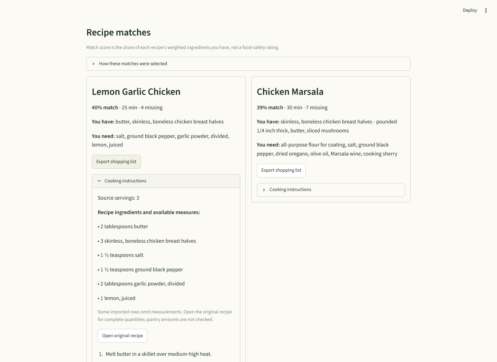
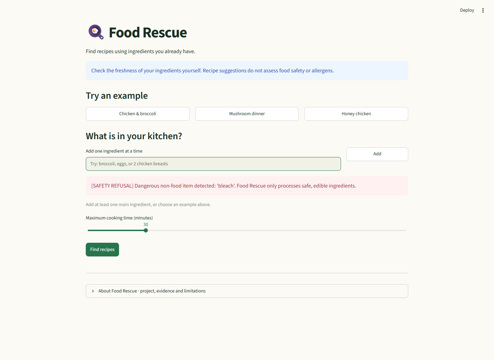

Start with your kitchen
Enter one English ingredient at a time or choose a preset. Mark perishables to use soon and set a cooking-time limit.
A pantry list, a little time, and ingredients to use soon. Find existing recipes, see what is missing, and take a shopping list with you.
Run Food RescueExplore the codeNo API key required for the core app. Designed for students cooking in small or shared kitchens.
Pantry + use-soon choices + minutes → shared input guards → normalized names and aliases → hard time filter → weighted coverage ranking → top three recipe cards and shopping list.
Enter one English ingredient at a time or choose a preset. Mark perishables to use soon and set a cooking-time limit.
See pantry coverage, missing ingredients, source quantities and original instructions. The score measures ingredient overlap.
The optional AI selects a matched ingredient to highlight. It cannot rewrite recipe facts or steps; unavailable AI visibly falls back.
Ingredient normalization and regional aliases; weighted matching (use-soon 1.5, staples 0.5, other ingredients 1.0); shared hazard/scope/input checks; browser workflow and shopping-list export; a CLI and MCP tool; repeatable evaluation. Streamlit supplies interface components, Python supplies the runtime, and the existing recipe corpus supplies source recipes. Optional Qwen is accessed through a compatible client.
We retained the midterm's fixed CSV and shared Python service. PostgreSQL, Redis, spaCy and vector search were deferred; cached parsing and deterministic rules keep this 1,018-title version simple to reproduce.
Measured input: chicken breast, mushroom, butter and flour; mushroom marked use-soon; maximum 30 minutes.
You have: all-purpose flour for coating, skinless, boneless chicken breast halves - pounded 1/4 inch thick, butter, sliced mushrooms
You need: salt, ground black pepper, dried oregano, olive oil, Marsala wine, cooking sherry
Original recipe and complete directions · Check the recorded JSON


Known-item Top-10 hits
Normalization reference matches
Refusal cases passed
All 30/30 time-filter queries passed, covering 243 returned recipes. Across three cold-start searches, the maximum measured service time was 0.272 seconds; warm median was 0.022 seconds on the recorded machine.
Small, explicit known-item convenience set: three core ingredients per recipe, no time limit; target title must appear in the first 10. Includes broad queries expected to expose coverage-ranking limitations. Not a held-out user study. Latency measures in-process validation, CSV loading, scoring and response construction; browser/network and live-model latency are excluded. These results do not establish the proposal's end-to-end API or live-LLM SLA.
| Intended recipe | Three pantry ingredients | Observed rank | Top-10 |
|---|---|---|---|
| Chicken Katsu | chicken breast, egg, panko bread crumbs | 2 | Hit |
| Chicken Marsala | chicken breast, mushroom, Marsala wine | 3 | Hit |
| Chicken Stir-Fry | chicken breast, broccoli, soy sauce | 16 | Miss |
| Baked Garlic Parmesan Chicken | chicken breast, Parmesan cheese, bread crumbs | 2 | Hit |
| Pesto Pasta with Chicken | chicken breast, pasta, pesto sauce | 2 | Hit |
| Honey Glazed Chicken | chicken breast, honey, soy sauce | 1 | Hit |
| Salsa Chicken | chicken breast, salsa, taco seasoning | 1 | Hit |
| Mulligatawny Soup | chicken broth, curry powder, celery | 2 | Hit |
| Sarah's Homemade Applesauce | apple, sugar, cinnamon | 2 | Hit |
| Apple Crisp | apple, oat, cinnamon | 28 | Miss |
Regression tests cover the original ten scenarios, browser callbacks, invalid inputs, unavailable data, importer errors, provider timeout/invalid output, and a real MCP subprocess. Optional live AI is tested with mocks; a live browser run checks search, download, refusal and mobile layout.
Chicken Stir-Fry ranked 16 and Apple Crisp ranked 28, missing the Top-10 target. Coverage ranking can favor shorter recipes sharing fewer but proportionally more ingredients. A future explicit main-ingredient rule needs testing against a broader independent set.
The use-soon boost is a preference, so all top three recipes need not use it. Our mushroom browser example demonstrates this. An explicit must-use filter would be a distinct future feature. Arbitrary typos and Chinese input remain unsupported; source data can omit ingredients, measures or times. 41 recipes have unknown time and are excluded when a limit is set.
Food Rescue does not assess freshness or edibility, clear allergens, prescribe diets, or demonstrate reduced food waste. Keyword checks catch only known patterns. Check packaging and original recipes yourself; missing ingredients and quantities still matter. No dietary or religious certification is provided.
Pantry data remain in the active app session; the app does not write pantry history. Live AI is explicit opt-in and sends the selected title and matched ingredient options. Hosting/provider logs depend on the operator; avoid private or sensitive entries.
Recorded environment: Python 3.14.7 on Windows. From the repository root:
python -m venv .venv
.\.venv\Scripts\python -m pip install -r requirements-lock.txt
.\.venv\Scripts\python run_local.pyOn macOS/Linux use .venv/bin/python. For a dependency-free offline demo run python run_local.py --cli. The browser opens at the localhost URL printed by Streamlit.
python -m unittest discover -s tests -v
python src/mcp_server.py --test
python benchmark.py --repeats 3
python scripts/evaluate.pyRun tests using your installed environment's Python. Complete README · Reproduction and hosting notes
The fixed CSV preserves 59 seed recipes and expands to 1,018 unique titles using the public Recipes Dataset export. Catalogue metadata lists CC0: Public Domain. Per-recipe Allrecipes links are retained; underlying recipe rights and recipe safety were not independently audited. Source URLs, licence record and checksums.
Recorded evaluation: 2026-11-17T10:53:55.116822+00:00. This page displays real saved evidence. The repository includes scripts to rerun it; hosting and the final submitted revision should be verified separately.